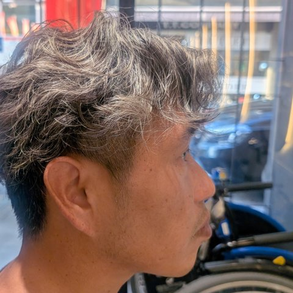

広島から ／ 地球活性化実行委員会
障がいがあっても、なくても。
自然につながれる場所を、広島に増やしたい。
地球活性化実行委員会は、電動車椅子で暮らす岡ちゃんの呼びかけで始まった広島の市民グループです。広島のまちで、誰もが気軽に集まり、知り合い、助け合える場所づくりに取り組んでいます。
ABOUT
呼びかけ人 岡ちゃん

広島在住。電動車椅子で生活しています。生活保護を受けながら暮らす中で、制度や支援だけでは埋まらない「人とのつながり」の大切さを実感してきました。
だからこそ、障がいの有無に関係なく、同じ場所で笑い合える機会を自分の手でつくりたい。地域の皆さんと一緒に、小さな一歩から始めています。
日々の活動は Instagram（@ayu19841002）で発信しています。
EVENT
夢フェスに出演します
2026年11月1日（日）
- 会場
- アリスガーデン（広島市中区）
- 内容
- 「ゆめのたね」主催の公開収録イベント「夢フェス」に、ゲストとして出演します。
- 時間
- 14:40〜
JOIN US
夢フェス・地球活性化実行委員会
仲間を募集しています
できることを、できる時間だけ。障がいのある方も、ない方も、どなたでも歓迎です。
SNS・撮影
活動の写真や動画を撮って発信
応援メンバー
LINEグループで情報を受け取り、イベントに参加
BLOG
活動ブログ
夢フェスまで、あと7日！暮らしを支える「補助犬」のお話
夢フェスまで、あと7日。今日は、盲導犬・介助犬・聴導犬の3つの「補助犬」を紹介します。それぞれの役割や、お店などで受け入れが決まっていること、見かけたときのお願いをまとめました。
夢フェスまで、あと8日！だれでも一緒に楽しめる「ボッチャ」
夢フェスまで、あと8日。今日は、白いボールに赤と青のボールを近づける「ボッチャ」を紹介します。障がいのある人もない人も、同じルールで一緒に楽しめるスポーツです。
夢フェスまで、あと9日！「バリアフリートイレ」のお話
夢フェスまで、あと9日。今日は、車椅子でも使える広い「バリアフリートイレ」について、使いたい人が集中してしまう問題や、国が呼びかけている「必要な人が必要なときに使える」ための工夫を紹介します。
夢フェスまで、あと10日！足もとの「点字ブロック」のお話
夢フェスまで、あと10日。今日は、まちの足もとにある黄色い「点字ブロック」のお話です。岡山で生まれた歴史や、2つの形の意味、その上に物を置かないお願いを紹介します。
夢フェスまで、あと11日！「合理的配慮」ってなんだろう？
夢フェスまで、あと11日。今日は、2024年4月からお店や会社にも義務になった「合理的配慮」について、車椅子の人への具体例をまじえながら、やさしく紹介します。
ARIGATOU